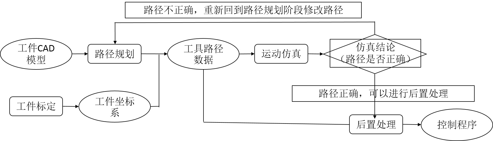
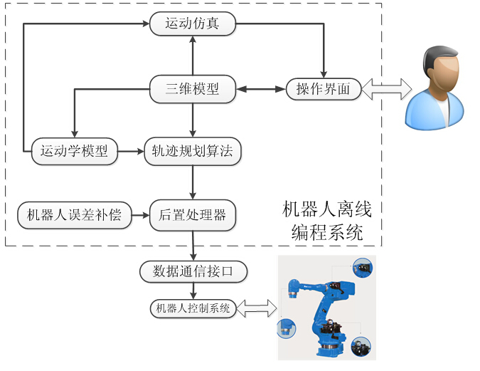

7.1离线编程的定义与发展现状
7.1.3离线编程的组成
机器人离线编程从狭义上讲，指通过三维模型生成NC程序的过程，概念上与数控加工离线编程类似，都必须经过标定、路径规划，运动仿真，后置处理几个步骤，如图7-3。一般而言，机器人离线编程可针对单个机器人或流水线上多个机器人进行，我们将针对单个机器人工作单元的编程称为单元编程，将针对流水线上多个机器人工作单元的协调编程称为流水线编程。本质上，流水线编程是由单元编程组成的，但是需要注意在各单元编程时设置好节拍。
图7-3 离线编程流程图
机器人离线编程系统是以实现机器人离线编程为主要功能的工具，主要包括操作界面、三维模型、运动模型、轨迹规划算法、运动仿真、后置处理器、数据通信接口和机器人误差补偿。机器人离线编程系统的组成如图7-4：
图7-4 机器人离线编程系统组成
1、操作界面
操作界面作为与用户交互的唯一途径，必须支持用户设定必要参数，同时将路径信息与仿真信息直观的显示给用户。
2、三维模型
三维模型是离线编程不可或缺的，路径规划和仿真都依托于已构建的机器人、工件、夹具以及工具的三维模型，所以离线编程系统通常需要CAD系统的支持，目前的离线编程软件从CAD的集成模式上分为三种：包含CAD功能的独立软件，支持CAD文件导入的独立软件，集成与CAD平台的功能模块。
3、运动学模型
运动学模型通常指机器人的正逆运动学计算模型，一般要求与机器人控制系统采用同样的算法，主要用于运动仿真的关节运动角度计算以及用于后置处理中生成直接控制关节运动量的快速运动。
4、轨迹规划算法
轨迹规划算法包括离线编程软件对工具运动路径的规划以及控制系统对TCP运动的规划，前者与工艺相关，由编程人员制定，后者与控制系统中轨迹插值和速度规划算法有关，不同厂家的控制系统路径规划算法差异很大。
5、运动仿真
运动仿真是检验轨迹合法性的必要过程和重要依据，编程人员需要根据仿真检查路径的正确性，及时避免刚体间的碰撞干涉。
6、数据通信接口
数据通信接口是指离线编程系统与机器人控制系统进行数据交换的方式，常见的有通过网线，通过USB接口，通过CF卡等。
7、机器人误差补偿
由于机器人连杆制造和装配的误差，以及刚度不足、环境温度变化等因素的影响，机器人的定位精度通常要比机床低很多，例如ABB IRB2400的定位精度大约为±1mm以内，这可以通过标定误差、修正NC指令等措施予以改善。